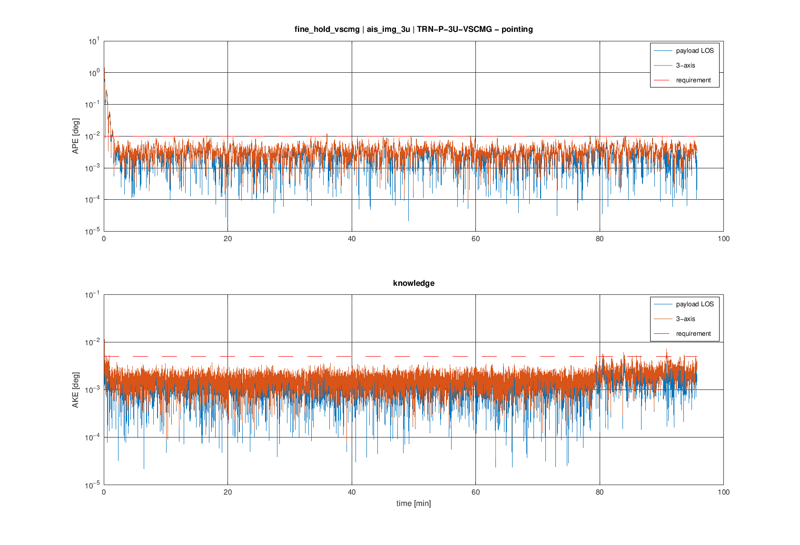
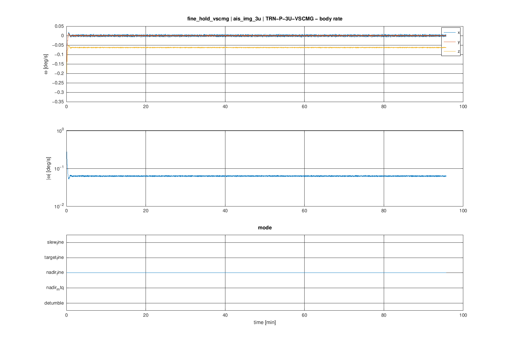
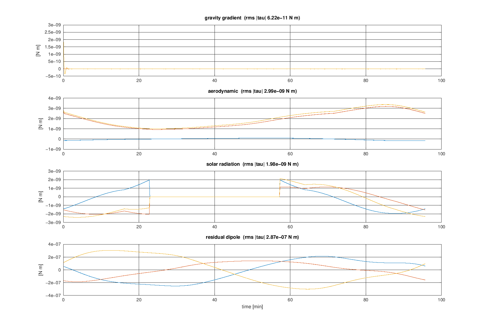
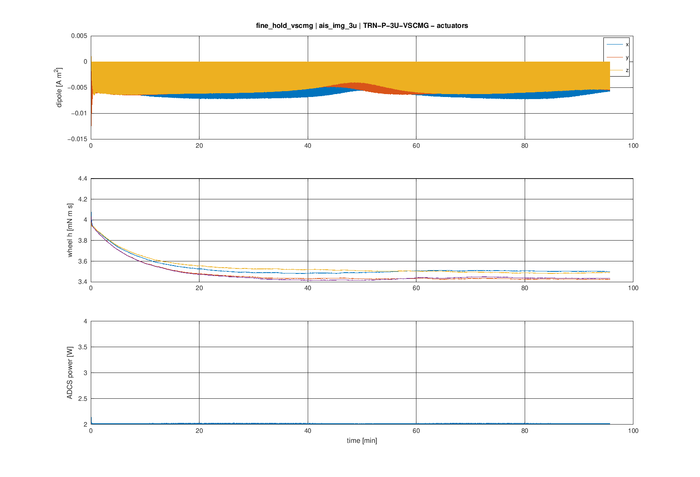
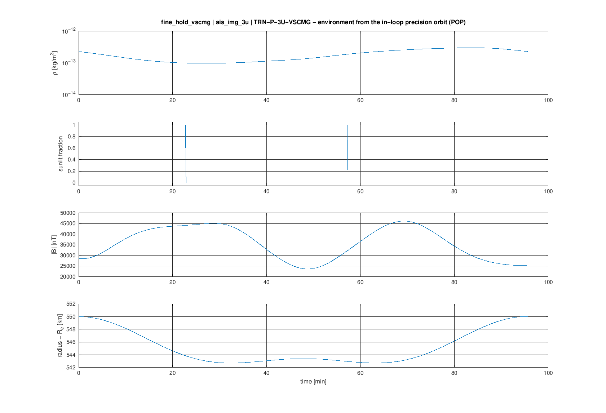
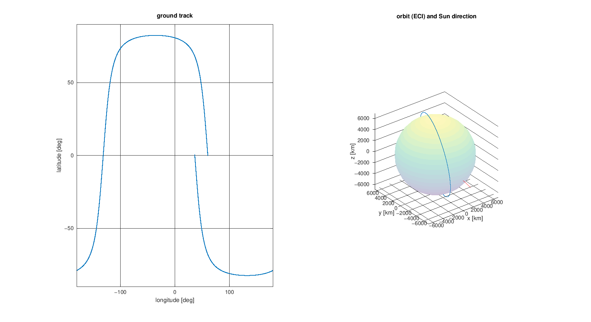

asils-1.0.0 (adcs-case/1, POP v51 in-loop) · case ais_img_3u (3U imaging satellite — fine pointing 0.01 deg, SSO 10:00 550 km) · product TRN-P-3U-VSCMG · seed 1 · owner: Agastya
| metric | value | required | verdict |
|---|---|---|---|
| ape_los_p9973 | 0.009129 deg | 0.01 | PASS |
| ape_los_max | 0.01036 deg | NaN | – |
| ape_3ax_p9973 | 0.009208 deg | NaN | – |
| ake_los_p9973 | 0.003558 deg | 0.005 | PASS |
| rate_stability_p9973 | 0.004557 deg/s | 0.001 | FAIL |
| time_to_0p01_deg | 89.3 s | NaN | – |
| wheel_momentum_peak | 0.004201 N m s | NaN | – |
| power_mean | 2.015 W | 2 | FAIL |






Copyright (c) 2026 Agastya. All rights reserved.